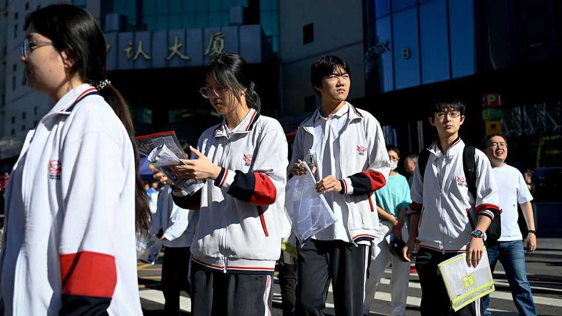
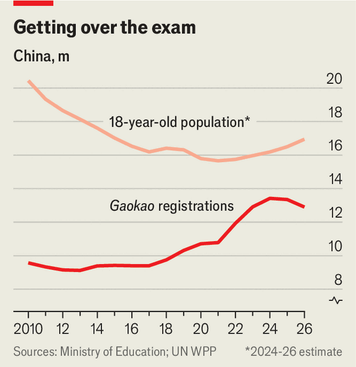

China’s notorious university-entrance exam is changing
Demography and AI are set to transform the gaokao
June 11th 2026

ON JUNE 7TH millions of young Chinese stepped into exam halls to take the gaokao, China’s gruelling national university-entrance exam. The results will decide where they can study and thus the calibre of job opportunities that follow. For many, it will have been a once-in-a-lifetime shot to move up in Chinese society.
Two things were different about this year’s iteration of the exam. One is that whereas in the past few decades, the number of test-takers was largely rising, now it appears to be in decline. The other is the increasingly pervasive use of artificial intelligence. The two trends will change how the young are educated in China over the coming years.

Official data show there were 12.9m registrations to take the gaokao this year, down from 13.4m in 2024 and the second consecutive year of decline (see chart). Though China has reached peak gaokao, however, it has not yet reached peak 18-year-olds (the average age of students taking the exam). One reason for the lower participation may be that reforms have made it harder for university hopefuls to do resits. Another could be high youth unemployment of around 17%. The sea of graduates struggling to find jobs may be putting some youngsters off the idea of university altogether.
Down the line, the decline will gather pace. This year’s cohort of gaokao-takers were mostly born in 2008, a year of 16.1m births. By 2025 births had more than halved, to just 7.9m. The demographic cliff is already visible in nurseries, which saw pupil numbers plummet from 46m to 32m between 2022 and 2025. Numbers in primary schools have also started to thin. Inevitably, over time, secondary schools and then colleges will follow.
The impact of AI is being felt much faster. A survey of 322,000 students last year by the China National Academy of Educational Sciences, a state-affiliated think-tank, found that 85.6% of them had already tried using AI to complete their homework. On popular apps such as Zuoyebang (“Homework Help”) and Yuanfudao (“Ape Tutoring”), pupils snap photos of questions and AI walks them through the solutions. (Teachers are using similar technologies to help mark homework.) In the run-up to the gaokao, Chinese AI firms barred their chatbots from solving exam questions in a bid to prevent any would-be cheaters from using them. When the results come out later this month, many will also use AI to advise which university and subject to select to maximise their chances of admission.
The government has big plans for AI in classrooms. In some rich places, change is already under way. Since the autumn term last year, all 1,400 primary and secondary schools in Beijing have rolled out lessons on “AI general education”. In Hangzhou, the centre of China’s AI boom, students vibe-code applications, play with robots provided by Unitree, a robotics startup, and use AI to generate paintings in the style of Van Gogh.
Many in China are worried about the possibility of AI making the education system outdated. Studying still consists of much rote memorisation and grinding through thousands of practice questions, tactics designed with the gaokao in mind. Some parents think it all looks rather concerning when knowledge is available from a chatbot prompt. But others also worry that AI will make education less effective. Ms Luo, a mum in Shanghai, let her son try the technology, but before long found that he was just copying the solution generated by AI, rather than trying to understand it. His grades have fallen. Ms Yang, fresh from finishing her gaokao, says AI was helpful for revision but worries it could weaken her writing skills.
The double whammy of demography and AI will squeeze teachers and tutors alike. Demand for them will fall as pupil numbers shrink. At the same time, advocates of AI say their systems will provide infinite knowledge and endless patience on demand—at a fraction of the cost of real tutors. Those who teach English are especially worried. AI can already speak the language more fluently, and without an accent, than many of them. As a result, some exasperated parents ask why they are paying humans for help with the language.
There may yet be advantages for teachers. As many as 60 pupils have to squeeze into a single classroom in China; AI might be able to provide tailored instruction in ways that teachers never could manage. But there will always be a need for human interaction, believes Mr Shi, a former maths teacher at New Oriental, a large tutoring company. Successful teachers are those who can connect emotionally with their pupils and so motivate them. ■
Subscribers can sign up to Drum Tower, our new weekly newsletter, to understand what the world makes of China—and what China makes of the world.